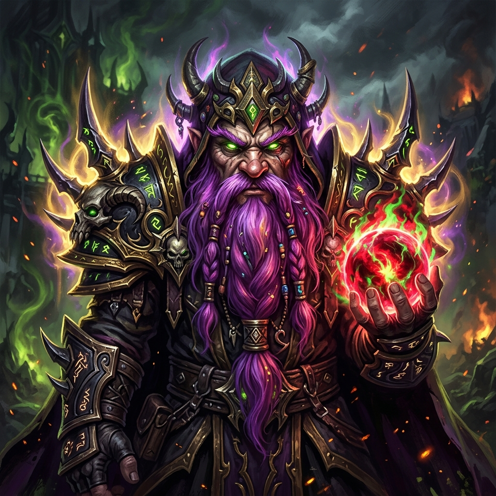
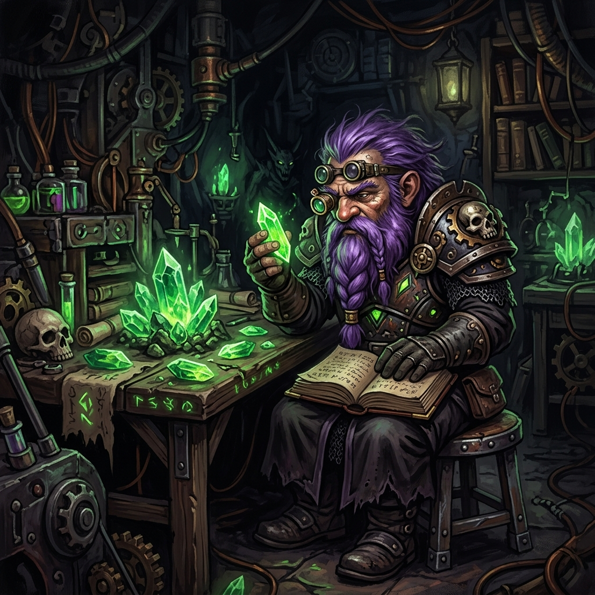
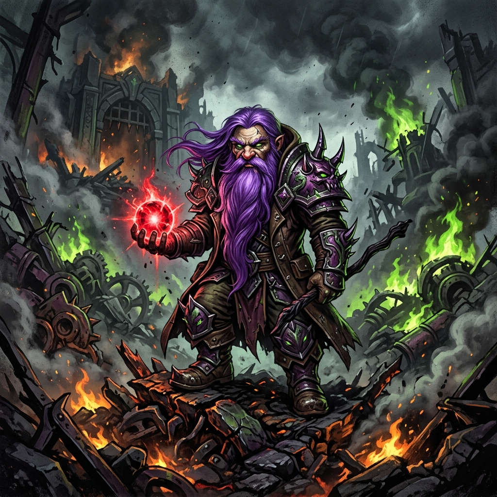
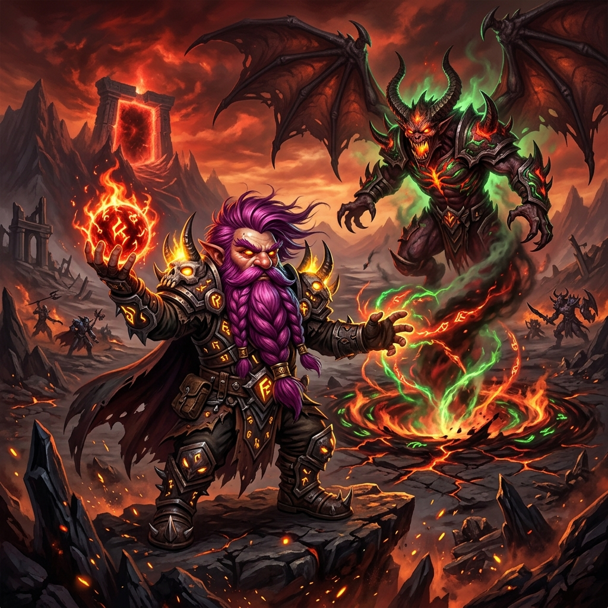
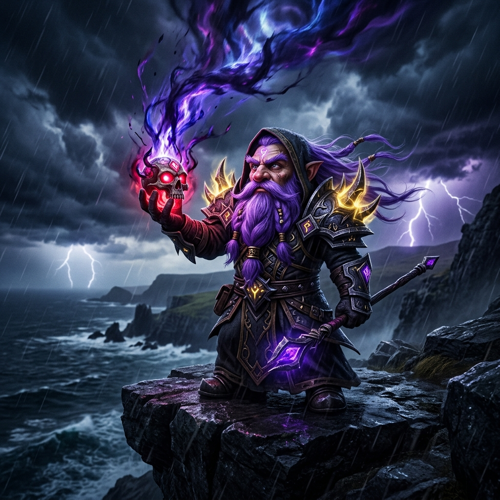
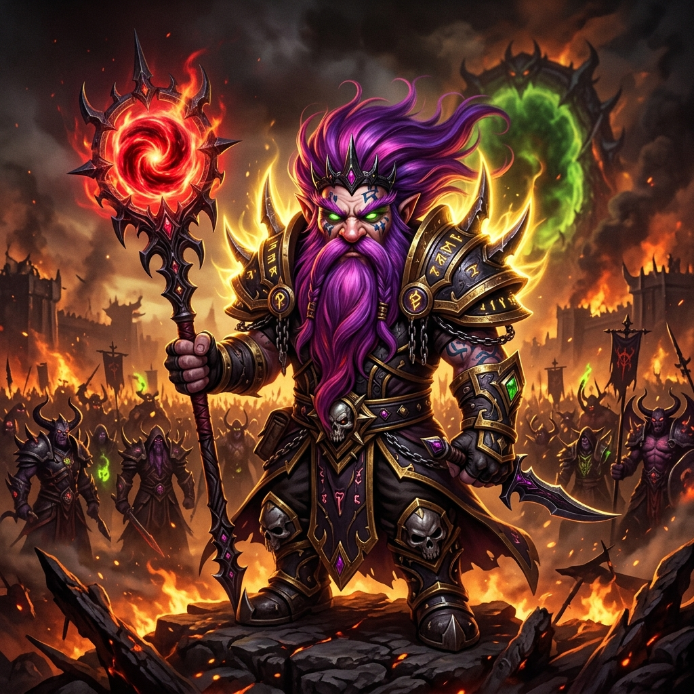
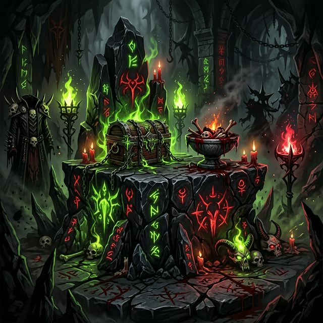

El ecosistema táctico definitivo. Maestría letal del Vacío materializada en código. El clan más mortífero de Turtle WoW.
Desciende

Conocido en el mundo mortal como DarckRovert.
Gnomo Brujo, arquitecto del caos y mente maestra detrás de "El Séquito del Terror". Su intelecto táctico no se mide en fuerza bruta, sino en la escalofriante precisión milimétrica de sus designios destructivos. Guía al clan desde las sombras con dominio absoluto sobre la vida y la muerte. El vacío lo precede. Su leyenda lo sobrevive.
Conocimiento prohibido. Poder absoluto.
La historia de cómo un intelecto maestro superó las limitaciones de los mortales, abrazando el Vacío para crear el ecosistema de dominación más avanzado de Azeroth.
En las profundidades de Gnomeregan, mientras sus pares se obsesionaban con engranajes efímeros y vapor, Elnazzareno fijó su mirada en la eternidad. Desde muy joven, descubrió un interés perturbador por los cristales de Fuego Vil que los brujos más ancianos ocultaban.
Sus prácticas oscuras y la sed insaciable de conocimiento prohibido no pasaron desapercibidas. Consideradas herejía por el concilio, sus investigaciones le valieron la expulsión de su gremio. Ese fue su primer contacto formal con las insidiosas promesas de la Disformidad.

Cuando la gran traición destruyó Gnomeregan, la radiación inundó la ciudad. Lo que para la mayoría supuso la muerte o la mutación en leprosos decrépitos, para Elnazzareno fue un catalizador oscuro.
La catástrofe radiactiva no destrozó su mente; interactuó con el Fuego Vil de sus años de estudio. En lugar de matarlo, lo transformó. Su cabello y su barba se tornaron de un violeta refulgente. Esa fue la revelación absoluta: el verdadero poder no provenía de máquinas frágiles, sino del consumo de la vida misma a través de las sombras y la destrucción.

Marginado del resto de los sobrevivientes, buscó refugio en los páramos corrompidos de las Tierras Devastadas. Durante largos años de soledad, perfeccionó las artes de la Destrucción y la Aflicción en uno de los lugares más infames y desolados de Azeroth.
Consumiendo energía residual demoníaca como sustento principal, ató demonios más grandes y violentos a su voluntad, despojándose de toda empatía para abrazar la eficiencia aterradora del sacrificio. Así, cimentó los primeros tratados y pactos oscuros que formarían a su hermandad.

Su peregrinación lo llevó finalmente a las oscuras cimas de los Acantilados Aullantes en Rasganorte. Allí, en un punto focal donde el velo entre el mundo mortal y el Vacío era delgado, ejecutó su rito maestro, cediendo parte de su mortalidad al Abismo.
Hizo un pacto con un ente etéreo para adquirir omnisciencia táctica sobre el campo de batalla. Nació así el "Esbirro del Terror", una manifestación informe que sirve de ojos y manos crueles. Un constructo sombrío que purga lo debil en el Séquito, garantizando que sus seguidores actúen con una precisión que hiela la sangre.

Hoy, "El Séquito del Terror" no es simplemente otra banda de mercenarios armados con espadas y magia tradicional. Es la culminación de la filosofía de Elnazzareno. Buscó artesanos de la muerte, mentes perversas cuya devoción a las sombras fuera inquebrantable.
Enemigos de Alianza y Horda caen por igual ante esta legión silenciosa. Operando con la coordinación de depredadores impulsados por el Vacío, su mera presencia significa agonía sin salida. Elnazzareno, envuelto en su aura dorada y su cabello violeta vibrante, contempla su victoria.

Abandona la luz. Abraza el algoritmo letal. Únete a las filas de la supremacía verdadera.
Ofrecer Lealtad en DiscordNuestras modificaciones otorgan una ventaja táctica injusta, esculpidas a medida del Séquito.
El cerebro central del ecosistema. 14 pestañas de control táctico, IA DQN, banco de clan y sincronización P2P.
Entidad algorítmica exógena forjada en el Vacío. Control de invocaciones y secuencias de combate en tiempo real en Turtle WoW sin latencia.
Domina el transcurso de los dots y debuffs. Control absoluto sobre la agonía enemiga.
Alertas premonitorias de raid. Entérate de la catástrofe antes de que ocurra.
Ingeniería de comportamiento autónomo supremo. Tus mascotas piensan táctica pura.
Analíticas letales. Cuantifica la destrucción real del clan en bruto, segundo a segundo.
Cartografía avanzada y bases de datos integradas para navegar el mundo de Turtle WoW con ventaja táctica.
Dominación económica absoluta. Interfaz de subastas optimizada para amasar fortunas y financiar la guerra del clan.
Sanación quirúrgica y gestión de bandas. Mantén con vida al Séquito mientras la oscuridad consume a tus enemigos.
Rediseño total de la interfaz. Minimalismo letal y control absoluto sobre cada píxel de tu campo de batalla.
Guía de misiones integrada. Optimiza tu ascenso al poder sin distracciones innecesarias.
Operando tras los velos, este macro-framework unificador (v9.3.1 [God-Tier]) es la médula espinal empoderada por el Vacío que moldea nuestra supremacía táctica. 14 sellos de control. IA Predictiva. Sincronización P2P. Nacido del Abismo. Forjado para el dominio total.
Ver Código FundamentalBienvenido al Lado Oscuro
Instalación rápida vía Turtle WoW Launcher. Haz clic para copiar la URL y pégala en el juego.
En el Turtle WoW Launcher, haz clic en la pestaña superior ADDONS. Luego busca y haz clic en el botón verde + Añadir addon.
Haz clic en cada botón para copiar su URL. Luego pégala en el recuadro del Launcher y haz clic en "Instalar".
Comienza siempre instalando el WCS_Brain.
Al entrar al juego, cerciórate de que el botón "AddOns" (esquina inferior izquierda) tenga activos los 10 addons. Dentro del mundo, abre el panel central del ecosistema con el comando:
/wcsbrain
también: /wb
Selecciona tu perfil de clan desde el menú de 14 pestañas. Verifica que el indicador del ecosistema muestra los 10 addons conectados en verde.
El "Esbirro del Terror" opera externamente al juego usando modelos de lenguaje local. Solo los brujos de mayor rango deben intentar esta invocación.
Deberás clonar el repositorio DARKAI/PUENTE en tu máquina, instalar Ollama, cargar el modelo `Moondream`, e iniciar el entorno Python.
Ver Documentación de Instalación IA1. Ve a nuestro GitHub de la organización.
2. Descarga el ZIP de cada uno de los 10 repositorios desde "Code → Download ZIP".
3. Extrae cada ZIP y copia la carpeta dentro de tu directorio de Turtle WoW: 📁 C:\TurtleWoW\Interface\AddOns\
⚠️ Atención: Asegúrate de que no haya carpetas dobles (ej: no debes tener WCS_Brain-main/WCS_Brain/, solo WCS_Brain/).
4. Reinicia el juego y actívalos.
¿Tienes dudas con la instalación? Pregunta en nuestro Discord.
Pedir Ayuda en DiscordLos Elegidos del Vacío
Estos son los guerreros que han jurado lealtad inquebrantable a las sombras. Pocos. Letales. Y con una insaciable sed de conquista.
Arquitecto del ecosistema. Maestro supremo de la voluntad abismal y la aniquilación orquestada.
El Séquito crece. El vacío te llama. Los addons te esperan.
El terror no admite debilidad. Requerimos disciplina inquebrantable y letalidad pura en campo de batalla.
Instala los addons. Entra al Discord. Da un paso hacia la oscuridad.
El terror busca nuevos agentes
No somos un clan cualquiera. Somos un ecosistema. Si cumples los requisitos, el Vacío te aceptará.
Sigue el tutorial de instalación de esta misma página.
Entra al servidor y lee las normas del clan.
Di quién eres, qué clase juegas y por qué mereces estar aquí.
Una incursión de prueba. El ecosistema hablará por ti.
El dominio absoluto requiere sacrificio constante. Alimenta la maquinaria bélica del Séquito y asegura el conjuro implacable de nuevos ecosistemas. El Vacío nunca sacia su hambre, y nosotros tampoco.
